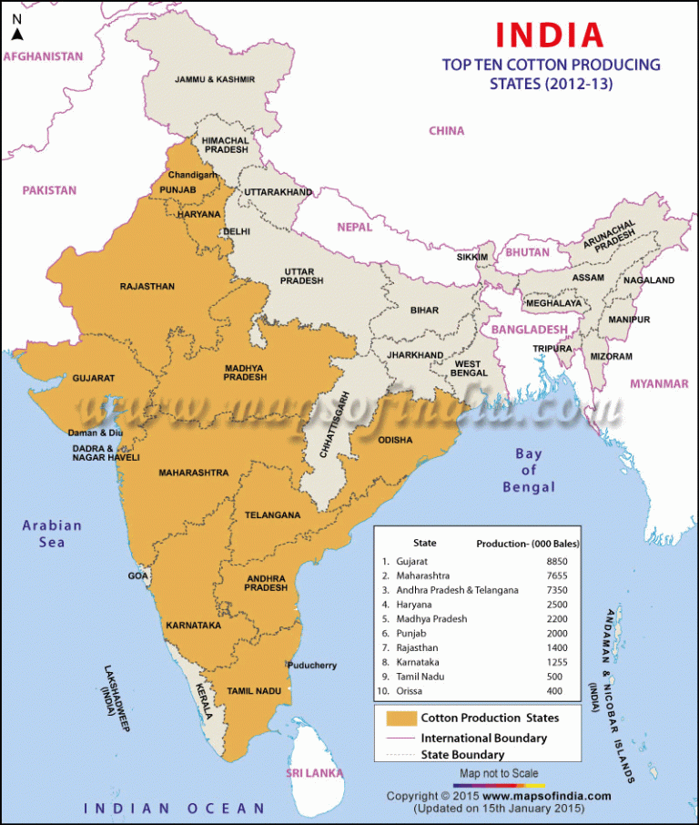

Cotton is a tropical and subtropical Kharif crop. It is a fibre crop and is known as ‘White gold’. India ranks 3rd in the production of cotton worldwide. It is a dry crop but roots need timely supply of water at maturity.
Type of Crop: Kharif Varieties: Long Staple, Medium Staple, Short Staple Temperature: 21-30 °C Rainfall: 50-100 cm Soil Type: Black soil (Highly water retentive soil) Major Producers: Gujarat, Maharashtra, Andhra Pradesh, Haryana, Madhya Pradesh, Punjab, Rajasthan, Karnataka, Tamil Nadu, Orissa Leading Producer: Gujarat (According to the 2015 report) Research Centres: Nagpur, Maharashtra Highest Producing Country: China